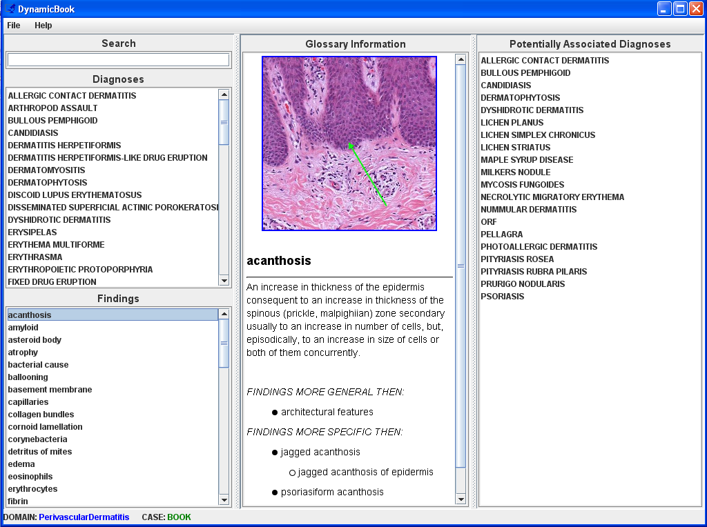

Dynamic Book Guide
In this guide, you will be introduced to our cognitive learning system called the Dynamic Book. This system consists of findings and diagnoses within the area of Dermatopathology being tutored. You can select items to see more information about them.
Below is a screen shot of the Dynamic Book.

The Dynamic Book is laid out in three columns. The first column is where you make your selections. The other two columns contain additional information about whatever is selected.
To select an item, left click the appropriate item. If a diagnosis is selected, in the middle column, you will see a definition of the diagnosis, and the third column lists findings the disease can have. If multiple lists of findings are provided, this means the diagnosis can have different sets of findings.
If a finding is selected, in the middle column, you will see an example picture of that finding, the definition for the finding, and any findings that are more general or more specific than the selected finding. On the right-hand side, you’ll see a list of diagnoses that contain that finding.
You can select more than one finding by holding down the control key on your keyboard and selecting multiple findings. This is useful when you want to narrow down diagnoses by the findings that are associated with them.
You can also select more than one diagnosis by holding down the control key on your keyboard and selecting multiple diagnoses. This is useful when you want to compare diagnostic rules of the selected diagnoses.
To use the search tool, just type in whatever it is you want to search for. You can just type a few characters. To go back to the full list of items, simply delete your search term.